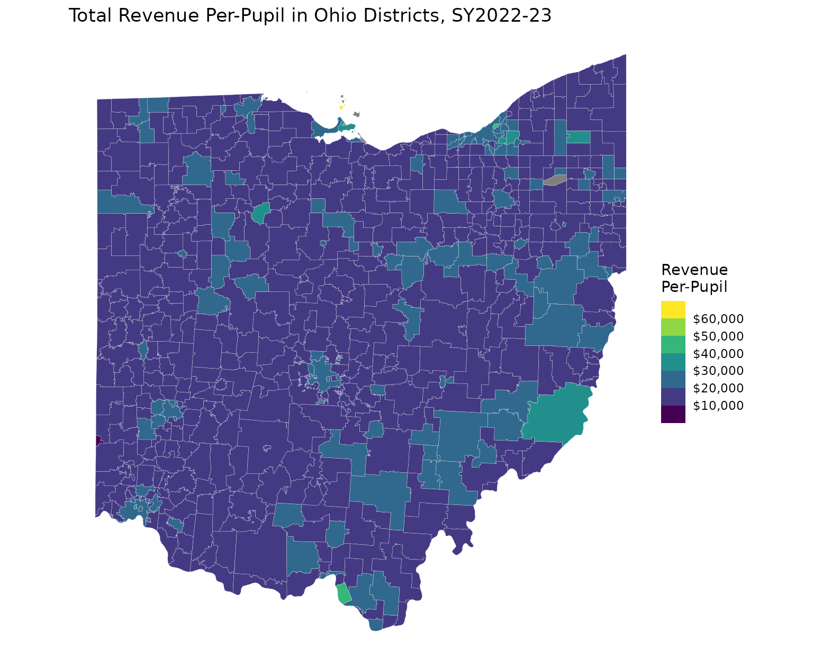
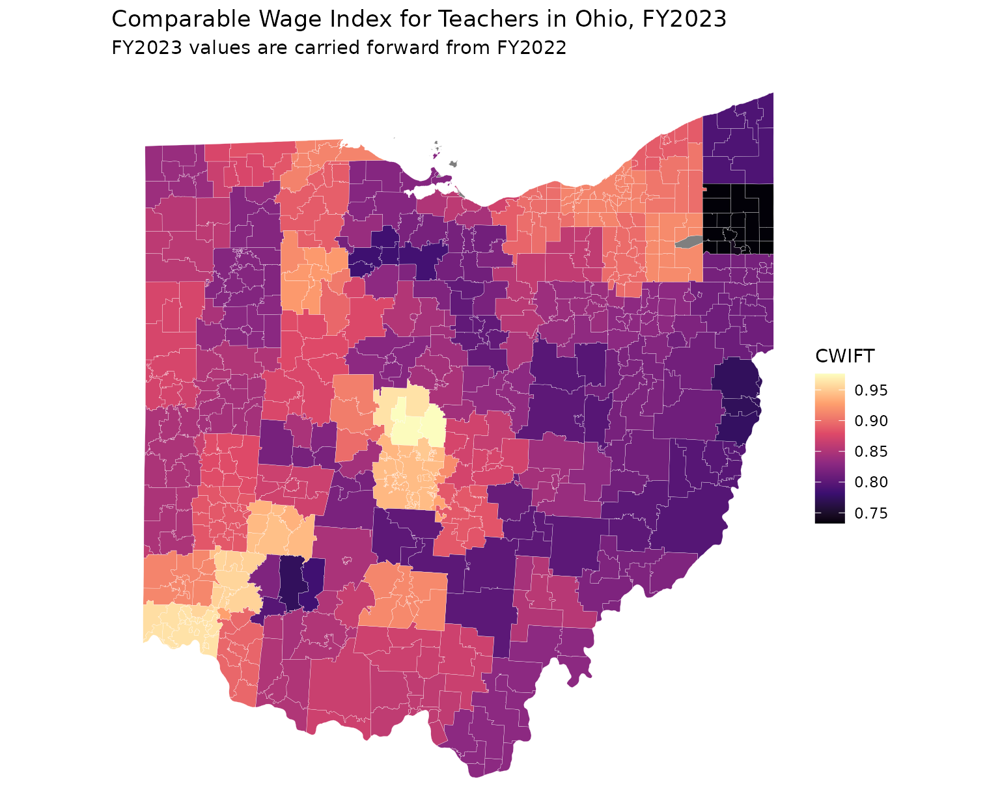

Introduction
Maps are often the most effective way to communicate school finance
patterns: funding disparities, labor-cost geography, and property-wealth
gradients all have strong spatial structure. edfinr does
not ship geometries, but its ncesid matches the GEOID used
by Census Bureau school district boundary files – the same identifier
the package itself uses to join ACS data – so joining finance data to
shapes from the tigris
package is a straightforward process.
Before you map: district geography caveats
-
Three overlapping layers. Census publishes
unified, elementary, and secondary school
district boundaries. In states where elementary and secondary districts
coexist (Illinois, California, and others), the layers overlap, and
mapping only the unified layer silently drops districts.
tigris::school_districts()takes atypeargument; check your state’s structure before assuming"unified"covers it. -
Boundaries change. Use a geometry
yearclose to your data year, since district consolidations and boundary changes accumulate. -
Cartographic boundary files.
cb = TRUEreturns generalized boundaries that are smaller and draw faster; use the default TIGER/Line files only when you need legal-boundary precision. -
Not every district joins. Some
edfinrdistricts (certain charter LEAs, for example) have no mapped boundary, and some mapped areas have no finance record. Count the misses after joining rather than assuming completeness. - Map area tracks geography, not students. Geographically large, sparsely populated rural districts dominate a statewide choropleth’s ink, while the districts serving the most students occupy the least. A map can invert the visual impression of where most students actually are; consider labeling or insetting major metros when that distinction matters.
Joining finance data to boundaries
Ohio features unified school districts, which keeps the example
simple and avoids overlapping geometries. First, pull the finance data
and the boundaries, then join on GEOID = ncesid:
oh_2023 <- get_finance_data(yr = "2023", geo = "OH")
oh_shapes <- school_districts(state = "OH", year = 2023, cb = TRUE)## | | | 0% | |== | 3% | |====== | 9% | |======= | 10% | |============= | 19% | |============== | 20% | |================ | 22% | |========================= | 35% | |========================== | 37% | |============================= | 41% | |=================================== | 50% | |===================================== | 52% | |====================================== | 54% | |======================================= | 56% | |============================================= | 65% | |======================================================= | 79% | |============================================================= | 87% | |=============================================================== | 89% | |================================================================ | 92% | |======================================================================| 100%
oh_map <- oh_shapes |>
left_join(oh_2023, by = c("GEOID" = "ncesid"))
# diagnostics: how many shapes have no finance record, and vice versa?
sum(is.na(oh_map$rev_total_pp))## [1] 4
nrow(anti_join(oh_2023, sf::st_drop_geometry(oh_shapes), by = c("ncesid" = "GEOID")))## [1] 327Mapping per-pupil revenue
With an sf object, ggplot2::geom_sf()
handles the rest. Binned scale usually communicate funding levels better
than continuous gradients (which can be skewed by outliers), because
readers can attach a dollar range to each color:
ggplot(oh_map) +
geom_sf(aes(fill = rev_total_pp), color = "white", linewidth = 0.05) +
scale_fill_viridis_b(
n.breaks = 6,
labels = scales::label_dollar()
) +
labs(
title = "Total Revenue Per-Pupil in Ohio Districts, SY2022-23",
fill = "Revenue\nPer-Pupil"
) +
theme_void()
Mapping labor costs with CWIFT
Any edfinr variable maps the same way. The CWIFT
teacher-wage index makes the metro/rural labor-cost geography visible
(see the “CWIFT” article for what the index does and does not
measure):
ggplot(oh_map) +
geom_sf(aes(fill = cwift_est), color = "white", linewidth = 0.05) +
scale_fill_viridis_c(option = "magma") +
labs(
title = "Comparable Wage Index for Teachers in Ohio, FY2023",
subtitle = "FY2023 values are carried forward from FY2022",
fill = "CWIFT"
) +
theme_void()
Going further
-
Multi-state maps:
school_districts()accepts a vector of states; filterget_finance_data(geo = ...)to match. -
Coastal states:
tigris::erase_water()improves shoreline maps. -
ACS overlays: the tidycensus package
retrieves ACS variables with geometry included
(
geometry = TRUE); its GEOIDs join toncesidthe same way, which is convenient when you need ACS measures beyond those bundled inedfinr. -
Interactive maps:
sfobjects work directly withmapviewandleafletfor exploratory work.